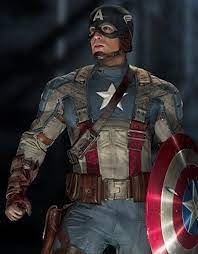
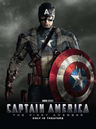

캡틴 아메리카
캡틴 아메리카
 소개
캡틴 아메리카의 캡틴은 초창기 코믹스에서 말 그대로 미국의 대장이라는 뉘앙스로 쓰였으나
시간이 흘러 역사적 군사적인 요소가 캐릭터에 추가 되면서
미합중국 육군 장교 계급으로서의 대위의 의미를 함께 띄는 모습으로 변했다.
특징

사실 캡틴 아메리카라는 캐릭터의 구상은 그 대척점이라 할 수 있는 악당에서 출발했다. 캡틴 아메리카를 구상한 작가
조 사이먼은 다른 작가인 잭 커비와 신문을 보다가 유럽을 정복하려는 히틀러를 보고 우리가 만들수 있는 어떤 악당보다
완벽한 악당이라고 생각해따고 인터뷰에서 밝혔다.
높은 목소리로 헛소리나 하고 엉덩이를 뒤뚱거리는 추종자들이 잔뜩 있는 인간이라고
그런 아돌프 히틀러의 완벽한 대적자를 만들자는 생각 하에 만들어진 캐릭터가 바로 캡틴 아메리카인 것이다.
능력
지치지 않는 채력과 인간을 뛰어넘는 힘
절대 부술 수 없는 방패
방염 방탄이 되는 옷
뛰어난 상화 판단력과 지도력
언제든지 자신을 희생할 성격
달인의 경지에 오른 격투 실력
전략과 전술의 대가
강인한 정신력
돌아가기